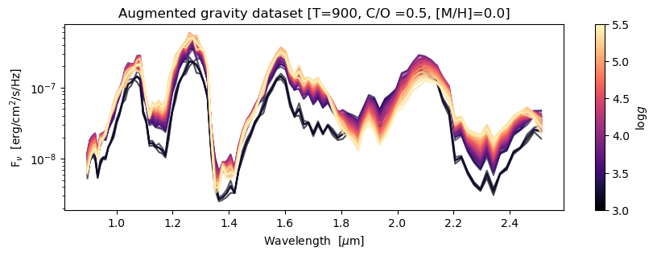

Exploring the Example Dataset
[229]:
import sys
sys.path.insert(0, '../../codes/')
import seaborn as sns
from predict_observational_dataset_v2 import ProcessObservationalDataset
from train_cnn_regression_3 import *
from bokeh.palettes import colorblind
Step 1: Load the dataset
[230]:
# original dataset
df=pd.read_csv('../../datasets/browndwarf_R100_v4_newWL_v4_augmented.csv.bz2', compression='bz2')
df.head(5)
[230]:
| gravity | temperature | c_o_ratio | metallicity | 2.512 | 2.487 | 2.462 | 2.438 | 2.413 | 2.389 | ... | 0.971 | 0.962 | 0.952 | 0.943 | 0.933 | 0.924 | 0.915 | 0.906 | 0.897 | is_augmented | |
|---|---|---|---|---|---|---|---|---|---|---|---|---|---|---|---|---|---|---|---|---|---|
| 0 | 5.0 | 1100 | 0.25 | -1.0 | 9.103045e-08 | 1.181658e-07 | 1.307868e-07 | 1.269229e-07 | 1.159179e-07 | 8.925110e-08 | ... | 9.640859e-08 | 7.612550e-08 | 6.901364e-08 | 6.247359e-08 | 4.112384e-08 | 5.127995e-08 | 4.897355e-08 | 4.087795e-08 | 2.791689e-08 | no |
| 1 | 5.0 | 1100 | 0.25 | -0.7 | 9.103045e-08 | 1.181658e-07 | 1.307868e-07 | 1.269229e-07 | 1.159179e-07 | 8.925110e-08 | ... | 9.640859e-08 | 7.612550e-08 | 6.901364e-08 | 6.247359e-08 | 4.112384e-08 | 5.127995e-08 | 4.897355e-08 | 4.087795e-08 | 2.791689e-08 | no |
| 2 | 5.0 | 1100 | 0.25 | -0.5 | 9.103045e-08 | 1.181658e-07 | 1.307868e-07 | 1.269229e-07 | 1.159179e-07 | 8.925110e-08 | ... | 9.640859e-08 | 7.612550e-08 | 6.901364e-08 | 6.247359e-08 | 4.112384e-08 | 5.127995e-08 | 4.897355e-08 | 4.087795e-08 | 2.791689e-08 | no |
| 3 | 5.0 | 1100 | 0.25 | -0.3 | 9.103045e-08 | 1.181658e-07 | 1.307868e-07 | 1.269229e-07 | 1.159179e-07 | 8.925110e-08 | ... | 9.640859e-08 | 7.612550e-08 | 6.901364e-08 | 6.247359e-08 | 4.112384e-08 | 5.127995e-08 | 4.897355e-08 | 4.087795e-08 | 2.791689e-08 | no |
| 4 | 5.0 | 1100 | 0.25 | 0.0 | 9.103045e-08 | 1.181658e-07 | 1.307868e-07 | 1.269229e-07 | 1.159179e-07 | 8.925110e-08 | ... | 9.640859e-08 | 7.612550e-08 | 6.901364e-08 | 6.247359e-08 | 4.112384e-08 | 5.127995e-08 | 4.897355e-08 | 4.087795e-08 | 2.791689e-08 | no |
5 rows × 109 columns
[231]:
df['is_augmented'].value_counts()
[231]:
GuassErr_std0.05 61776
GuassErr_std0.02 61776
GuassErr_std0.1 61776
no 30888
Gauss.02 30888
Gauss.05 30888
Gauss.1 30888
Conv5 30888
Conv10 30888
Conv15 30888
Name: is_augmented, dtype: int64
[233]:
wl = pd.read_csv('../../datasets/wl.csv')
wl.head(5)
[233]:
| wl | |
|---|---|
| 0 | 2.511960 |
| 1 | 2.486966 |
| 2 | 2.462220 |
| 3 | 2.437720 |
| 4 | 2.413464 |
[234]:
import pandas as pd
import matplotlib.pyplot as plt
import seaborn as sns
def plot_filtered_dataframe(dataset, filter_bounds, feature_to_plot, title_label):
"""
Plot a DataFrame with a single x-axis (using column names) and multiple y-axes.
Parameters:
- df (pd.DataFrame): DataFrame containing the data to be plotted.
"""
filtered_df = dataset.copy()
for feature, bounds in filter_bounds.items():
lower_bound, upper_bound = bounds
filtered_df = filtered_df[(filtered_df[feature] >= lower_bound) & (filtered_df[feature] <= upper_bound)]
filtered_df2 = filtered_df.sort_values(feature_to_plot, ascending = False).iloc[::1,4:-1][::-1]
fig, ax = plt.subplots(figsize=(10, 3))
x = filtered_df2.columns
df_transposed = filtered_df2.T # Transpose the DataFrame
# Define a color palette
num_colors = len(df_transposed.columns) # Number of colors needed (excluding x-axis)
colors = sns.color_palette('magma', num_colors)
for i, col in enumerate(df_transposed.columns):
# print(col)
if col != 'x': # Skip the x-axis column
ax.semilogy(wl.wl, df_transposed[col],
# label=data[col][:4].values,
color=colors[i], alpha = 0.7)
# print(filtered_data.T[col][:4].values[0])
ax.set_xlabel('Wavelength [$\mu$m]')
ax.set_ylabel(r'F$_{\nu}$ [erg/cm$^2$/s/Hz]')
dict_features = {'temperature':'Temperature', 'gravity':'gravity', 'metallicity':'metallicity', 'c_o_ratio':'C/O ratio'}
ax.set_title('Augmented '+dict_features[feature_to_plot]+" dataset "+title_label)
# ax.legend()
# Get the minimum and maximum values from the data
# vmin = df_transposed.values.min()
# vmax = df_transposed.values.max()
# Add colorbar
cmap = sns.color_palette('magma', as_cmap=True)
cbar = plt.colorbar(plt.cm.ScalarMappable(cmap=cmap,
norm=plt.Normalize(vmin=filter_bounds[feature_to_plot][0], vmax=filter_bounds[feature_to_plot][1])), ax=ax)
dict_features2 = {'temperature':'T [K]', 'gravity':'log$g$', 'metallicity':'[M/H]', 'c_o_ratio':'C/O ratio'}
cbar.set_label(dict_features2[feature_to_plot])
plt.savefig('../../outputs/regression/figures/'+'Augmented_'+feature_to_plot+"_dataset.pdf", dpi=500, bbox_inches='tight')
plt.show()
[235]:
# Define the filter bounds
filter_bounds = {'gravity': (5.,5),
'c_o_ratio' : (0.5,0.5),
'metallicity' : (0.0,0.0),
'temperature': (600, 1200)}
# Call the function to filter the dataset
plot_filtered_dataframe(df[df['is_augmented'].isin(
['GuassErr_std0.01',
'GuassErr_std0.02',
'GuassErr_std0.1',
'no'])],
filter_bounds,
'temperature',
title_label = '[log$g$='+str(filter_bounds['gravity'][0])+
', C/O ='+str(filter_bounds['c_o_ratio'][0])+
', [M/H]='+str(filter_bounds['metallicity'][0])+
']')
[236]:
# Define the filter bounds
filter_bounds = {'gravity': (3,5.5),
'c_o_ratio' : (0.5,0.5),
'metallicity' : (0.0,0.0),
'temperature': (900, 900)}
# Call the function to filter the dataset
plot_filtered_dataframe(df[df['is_augmented'].isin(
['GuassErr_std0.01',
'GuassErr_std0.02',
'GuassErr_std0.1',
'no'])],
filter_bounds,
'gravity',
title_label = '[T='+str(filter_bounds['temperature'][0])+
', C/O ='+str(filter_bounds['c_o_ratio'][0])+
', [M/H]='+str(filter_bounds['metallicity'][0])+
']')

[237]:
# Define the filter bounds
filter_bounds = {'gravity': (5.,5),
'c_o_ratio' : (0.25,2.5),
'metallicity' : (0.0,0.0),
'temperature': (900, 900)}
# Call the function to filter the dataset
plot_filtered_dataframe(df[df['is_augmented'].isin(
['GuassErr_std0.01',
'GuassErr_std0.02',
'GuassErr_std0.1',
'no'])],
filter_bounds,
'c_o_ratio',
title_label = '[T='+str(filter_bounds['temperature'][0])+
', log$g$='+str(filter_bounds['gravity'][0])+
', [M/H]='+str(filter_bounds['metallicity'][0])+
']')

[238]:
# Define the filter bounds
filter_bounds = {'gravity': (3,5.5),
'c_o_ratio' : (0.5,0.5),
'metallicity' : (-1.,2.),
'temperature': (900, 900)}
# Call the function to filter the dataset
plot_filtered_dataframe(df[df['is_augmented'].isin(
['GuassErr_std0.01',
'GuassErr_std0.02',
'GuassErr_std0.1',
'no'])],
filter_bounds,
'metallicity',
title_label = '[T='+str(filter_bounds['temperature'][0])+
', log$g$='+str(filter_bounds['gravity'][0])+
', C/O ='+str(filter_bounds['c_o_ratio'][0])+
']')